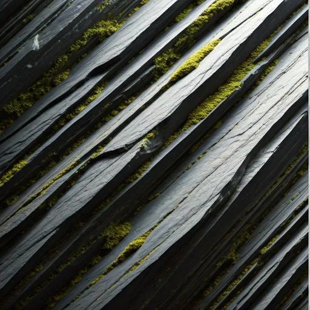

Built to Carry the Load.
A tumpline lets one traveler carry what should take three. We do the same for your infrastructure — VMware exits, ingress retirements, cloud cost control — delivered fixed-scope, by the people who scoped it.

Why “Tumpline”
A tumpline is a strap worn across the forehead that lets one traveler carry loads far beyond their apparent strength — voyageurs moved entire trade routes with them.
Good infrastructure should do the same: take the weight, distribute it properly, keep you moving. That’s the whole philosophy.
Founder-led. A decade of building consulting practices inside Canadian cloud firms — from first hire through acquisition.